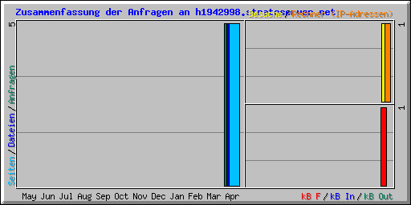

| Zusammenfassung nach Monaten | ||||||||||||
|---|---|---|---|---|---|---|---|---|---|---|---|---|
| Monat | Tagesdurchschnitt | Monats-Summe | ||||||||||
| Anfragen | Dateien | Seiten | Besuche | Rechner (IP-Adressen) | kB F | kB In | kB Out | Besuche | Seiten | Dateien | Anfragen | |
| Apr 2013 | 5 | 5 | 5 | 1 | 1 | 1 | 0 | 0 | 1 | 5 | 5 | 5 |
| Summen | 0 | 0 | 0 | 1 | 5 | 5 | 5 | |||||
| Generated by Webalizer Version 2.01 |